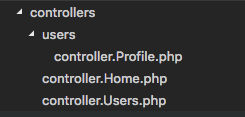

Routing in Cora
The default way Cora handles routing is fairly intuitive and I think the general gist can be explained in a few sentences... so here goes:
Cora looks at the URL and matches this against the files and folders in your Controllers directory. To the first matching controller+method combination it discovers, it passes control. If it fails to find a match, it returns a 404 page not found.
This can be changed a bit by turning Automatic Routing off and/or defining Custom Routes, but even then the internal routing that happens will follow the logic defined in this document.
Ok, so to remove the fuzziness on how this works, let's work through some examples.
How it works
Let's walk through a few scenarios using a Controllers directory that looks like this:

The key thing to notice upfront is that there's both a Users controller and a Users folder.
Let's say a user goes to the following URL:
MySite.com/users/profile/view/22
The first part of the URL the router is going to look at are the two pieces in red.
It asks the question:
Is there a Users controller?
The answer of course is YES, there is a Users controller. Which leads to the next question of:
Is there a method in the Users controller named "profile"?
Scenario 1
(reposting image for reference)
Let's pretend that there IS a "profile" method in the Users controller and that it looks like this:
public function profile($action, $id)
{
echo $action, "<br>", $id;
}
The router will have found a matching Controller+Method combination, and so will consider its job done and hand off execution control.
When application control gets handed off to this method, the remaining two pieces of the URL will get passed in as arguments. So in this case:
- $action will have the value "view"
- $id will have the value "22"
(This isn't a likely use-case for a real app, just explaining how the routing logic works)
Scenario 2
(reposting image for reference)
Let's pretend that there ISN'T a "profile" method in the Users controller. Under this scenario the router will then check if there's instead a "users" directory. In our case there is, so it will traverse into that directory and accordingly alter the part of the URL it's looking at.
The router will now focus on this part of the URL:
MySite.com/users/profile/view/22
Now it asks the question:
Is there a Profile controller inside the Users directory?
The answer is YES, there is a Profile controller. Which you might guess leads to the next question of:
Is there a method in the Profile controller named "view"?
- Yes, there's a view method:
In this case, the router will have found a matching Controller+Method combo, and so will pass off control and the remaining piece of the URL (the number 22) will be passed in to that method as an argument if it accepts one.
public function view($user_id) {
// code
}
- No, there isn't any view method:
If there ISN'T a View method in the Profile controller, then it will repeat the process it did ealier and check if there's a "profile" directory inside the "users" directory. This time there isn't any subdirectory for it to traverse into, so it will fail to find a matching Controller+Method combo and result in a 404 not found response.
The best way to fully understand how the routing works is to play around with it on your own. You should quickly find that it works fairly intuitively. Just make sure your Controllers have the correct namespace (read up on Controllers if you are unfamiliar with what that means).
Another Example
Let's say a user goes to:
www.MySite.com/articles/news/view/107
First Pass
Cora checks if there's an "Articles" controller with a "news" method.
Public function news($action, $id)
- IF YES, then it calls that controller+method and passes it two arguments: "view" and "107".
- IF NO, then it checks if there's an "articles" directory.
- Yes - Then it moves on to 2nd pass.
- NO - Then it directs user to 404 not found.
Second Pass
Cora, now in the "articles" directory, refocuses its attention on the next two pieces of the URL:
www.MySite.com/articles/news/view/107
Cora checks if there's an "News" controller with a "view" method.
Public function view($id)
- IF YES, then it calls that controller+method and passes it one argument: "107".
- IF NO, then it checks if there's a "news" directory.
- Yes - Then it moves on to 3nd pass.
- NO - Then it directs user to 404 not found.
Third Pass
Cora, now in the "news" directory, refocuses its attention on the next two pieces of the URL:
www.MySite.com/articles/news/view/107
If RESTful routing enabled (on my default):
Cora checks if there's a "View" controller with an "itemGET" method. It knows that a number is not a valid method name, so it makes the assumption that you are trying to fetch an item out of a collection. "itemGET" is a pre-defined method name for working with collections. See the RESTful routing section of this article.
Public function itemGET($id)
Is there a View controller with an itemGET method?
- IF YES, then it calls that controller+method and passes it one argument: "107".
- IF NO, Then it directs user to a 404 not found because it's reached the end of the URL.
If RESTful routing disabled:
Cora checks if there's an "View" controller with a $default (defined in config) method. Because the URL section it would expect a method to be in is numeric, it directs to the default method and passes the number as an argument.
Public function $default($id)
Is there a View controller with a $default method?
- IF YES, then it calls that controller+method and passes it one argument: "107".
- IF NO, Then it directs user to a 404 not found because it's reached the end of the URL.
Visibility
A little, but important thing to know about how Cora's routing works is that it obeys the visibility definitions on your methods. So if you define a method as protected or private, IT WILL NOT BE ACCESSIBLE FROM A URL. If someone tried going to a URL that gets routed to a non-public method, they will instead be given a 404 Not Found response.
Again, the goal was to make automatic routing feel natural and work in a way that makes sense.
RESTful Routing
By default, RESTful routing is enabled in Cora's config. What this does is cause requests to the same URL to route to different controller methods in your app depending on the HTTP method defined in the request.
In the examples below, we are going to assume the default method in Cora's config is defined to be "index" (unless you've changed it, that's what it normally is).
A Request to a Collection
A request to www.MySite.com/articles/ of the following types works like this:
| Request Type | Routed to Method | Expected Result (you have to implement) |
|---|---|---|
| GET /articles/ | index() | User views collection of articles |
| POST /articles/ | indexPOST() | Create a new article |
| PUT /articles/ | indexPUT() | Replace a collection with another |
| DELETE /articles/ | indexDELETE() | Delete collection |
| GET /articles/107 | itemGET($id) | View a specific article |
| POST /articles/107 | itemPOST($id) | NOT TYPICALLY USED |
| PUT /articles/107 | itemPUT($id) | Update a specific article |
| DELETE /articles/107 | itemDELETE($id) | DELETE a specific article |
A Request to a Method/Action
A request to www.MySite.com/articles/create/ of the following types works like this:
Note that any remaining pieces of the URL will get passed in as variables to the method.
| Request Type | Routed to Method | Expected Result (you have to implement) |
|---|---|---|
| GET /articles/create/ | create() | Show creation form |
| POST /articles/create/ | createPOST() | Process form submission |
| PUT /articles/create/ | createPUT() | Nothing. See collections instead |
| DELETE /articles/create/ | createDELETE() | Nothing. See collections instead |
Routing Options
There's a few routing options that can be set in the config. They are as follows:
Most used options (also shows default values)
-
$config['automatic_routing'] = true;
Should Cora try to automatically match URLs to a controller+method? If this is turned off, then you WILL HAVE TO manually define a route for every part of your application using custom route definitions. -
$config['enable_RESTful'] = true;
Should Cora route differently depending on the incoming HTTP request type? -
$config['default_controller'] = 'Home';
What is the default controller users should be sent to if they visit your homepage? (www.MySite.com) -
$config['default_method'] = 'index';
What is the default method for controllers? If a user goes to www.MySite.com/articles/ what method within the Articles controller should be given execution control?
Options that have to be set correctly, but can usually be left as default
-
$config['lowercase_url'] = true;
If your project is hosted on a case-sensitive system (e.g. Linux) and you want a URL to work regardless of whether a user typed part of it as uppercase. -
$config['psr4_namespaces'] = TRUE;
By Default, all classes in your app must be namespaced. If your controllers are located in a "controllers" directory, they must have a namespace of "controllers". If your models are in a "models" directory, they must have the namespace "models", etc. If you are working with a legacy app that was not built with namespacing in mind, you have the option to turn this off. If off, all controllers, models, classes, libraries, etc, in their respective root folders (/classes, /models, /controllers) will be in the global namespace. -
$config['pathToControllers'] = $config['basedir'].'controllers/';
If for some reason you want your controllers to be located elsewhere than in the Controllers directory. -
$config['controllersPrefix'] = 'controller.';
Prefix for your controller files. E.g. controller.Articles.php -
$config['controllersPostfix'] = '';
Postfix for your controller files. E.g. controller.Articles.inc.php
Custom Routes Introduction
Custom routes allow you to control how URLs are routed within your application. Some examples of things you can do with them include:
- Make a URL more friendly by hiding the exact internal route to reach the Controller.
- Redirect specific parts of your app to new Controllers without affecting functionality that hasn't been upgraded yet.
- Check user permissions before allowing access to parts of your site.
- etc
Also, some teams may not like the idea of Automatic Routing and may instead want to manually define all the routes - fair enough. All this is accomplished by defining "paths" for your app. An example might look like this:
// Let's forward GET and PUT requests to our api to the new version 2.
$path = new \Cora\Path();
$path->url = '/api/{collection}/{id}'; // The URL entered in a web browser
$path->route = '/api/v2/{collection}/{id}'; // The internal route that Cora will use.
$path->def['{id}'] = '[0-9]+'; // Defining ID to be numeric.
$path->actions = 'GET|PUT'; // The HTTP request types to match to this path.
$paths->add($path);
To learn more about Custom Routes check out the documentation page on that topic under Routing. Clicking the button below will take you straight there.